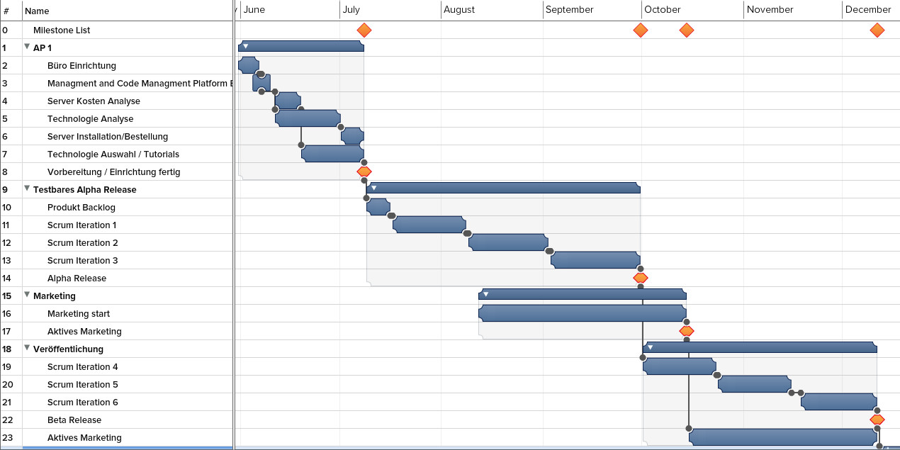
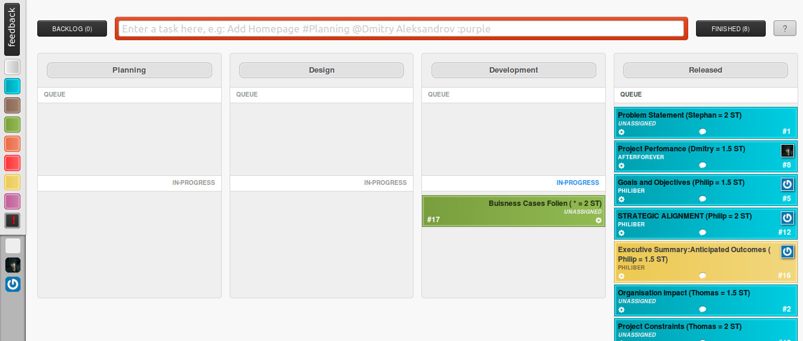

Social Share GmbH
- Software Entwicklungsfirma
- Exestiert noch nicht
- Innovation
- Vision: Besseres Welt mit innovativen Technologien und Ideen zu schaffen!
Social Share GmbH
Team leader
Team members
- Philipp Bergt
- Tobias Jahn
- Stephan Dörfler
- Thomas Bublak
Social Share als Projekt
- Platform, um besser die Events
- rausfinden
- organisieren
- Teilnehmer Anzahl frühzeitig abzuschätzen
- Mitorganisatoren gewinnen
- soziale Netzwerke wie Facebook bieten diese Möglichkeit nicht
- Kickstarter bieten das nicht
Social Share als Projekt
- Als Webanwendung realisiert
- Innovation in "social networking"
- Finanzierung als Existensgründung
Milestones für Software Entwicklung und Marketing für beta Release

Finanzplan
- Förderung (EXIST)
- Server
- Marketing
- Server
- Mitarbeiter Lohn
Keine Kosten
Backlog und Process Teile visuall

Lessons learned!
- Aufgaben Teilung
- Zeiteinschätzung
- Unklarheit
- Zeit findung
- Aufgaben Verschiebung
- Motivation
- Unvollständige Meetings
- Zusammenarbeit
Lessons learned!
- Scrum funktioniert
- Agile Prinzips
- Einfach, aber trotzdem tun
- Menschenfaktor
- Mehr Zusammenarbeit
Danke für die Aufmerksamkeit!